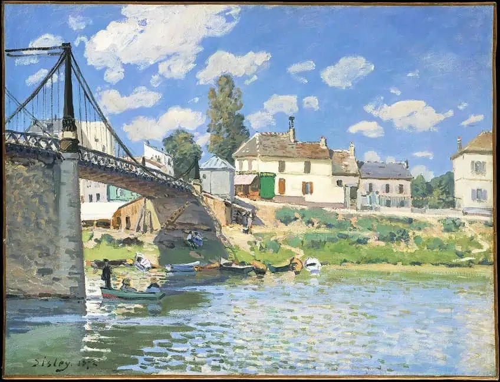
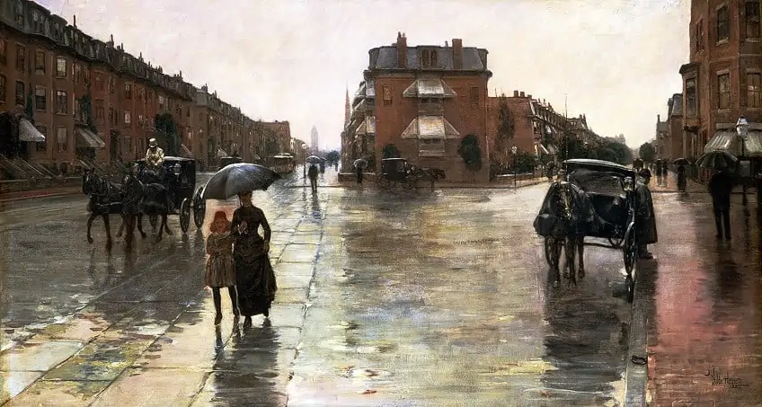

În epoca impresionismului, artiştii pictau imagini din viaţa modernă aşa cum o vedeau ei, creând impresia unui moment trecător şi efectele trecătoare ale luminii.
Pierre-Auguste Renoir - The Frog PondClaude Monet - Impression, sunriseMarie Bracquemond - Afternoon Tea

Alfred Sisley - Le Pont de Villeneuve-la-Garenne

Childe Hassam - Rainy Day, BostonBerthe Morisot - The CradleClaude Monet - PoppiesClaude Monet - Woman with a parasolEdgar Degas - The Dance ClassGustave Caillebotte - Paris Street: Rainy DayPierre-Auguste Renoir - Luncheon of the Boating PartyValentin Serov - Girl with PeachesPaul Cézanne - The Card PlayersCamille Pissarro - Le Boulevard Montmartre, Effet de Nuit